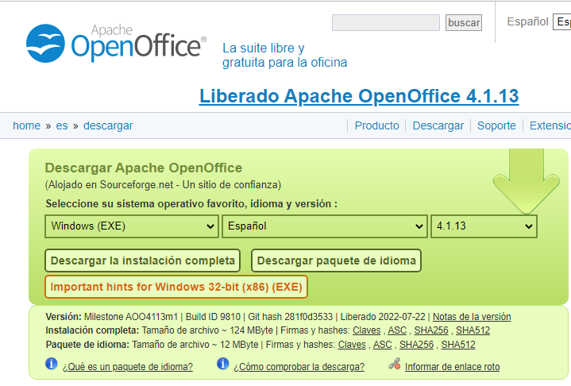
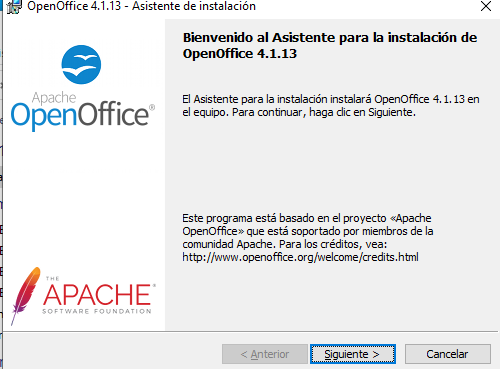
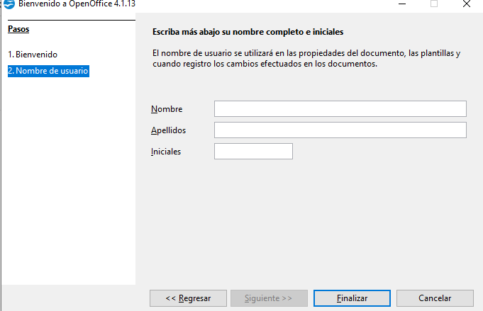
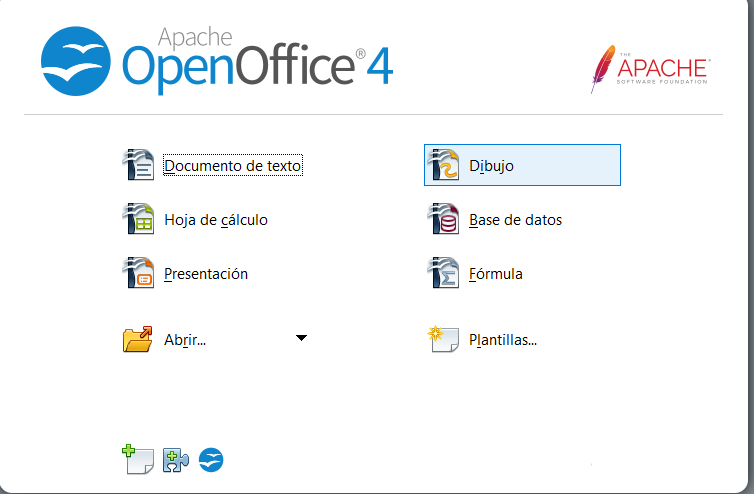
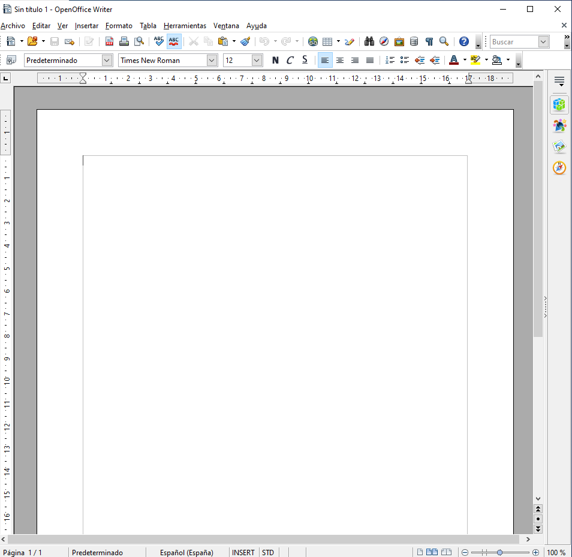

|  | Para empezar buscamos en el navegador la página oficial del paquete ofimatico, en este caso, el Apache Open Office y buscamos la ultima versión y procedemos a descargarla. | ||
|  | Una vez pulsado el botón de descargar, se iniciará automaticamente la descarga, en cuanto se descargue lo ejecutaremos como administrador, una vez ejecutado, nos saldrá una ventana con el asistente de instalación |  | Una vez terminado el aistente y haberse instalado, nos dará la bienvenida y tendremos que rellener con nuestros datos. |
|  | Ahora nos saldría un menú, en este caso pulsaremos sobre el documento de texto. |  | Y ya tendriamos el Apache Open Office instalado y listo para usar |